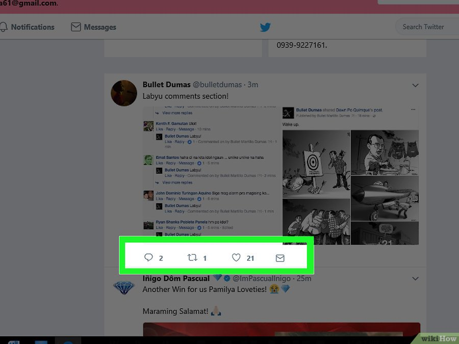

Всё о Twitter
Twitter определение
Тройка лидеров и пять популярных событий
Шесть причин для ретвита и основные факты
История
Устройство
Особенности
Как пользоваться
Правила твиттера
Возможности
Фотографии
Словарь
Карта сайта
Об авторе
Разные социальные сети служат разным целям, обладают своими сильными сторонами и преимуществами. Twitter (далее — Твиттер) можно назвать “социальной сетью в режиме реального времени”, местом, где делятся новостями в тот самый момент, когда они происходят. Многие люди находят через Твиттер друзей. Но для новичка может оказаться сложной задачей пользоваться всеми преимуществами Твиттер. Тем не менее, не стоит опускать руки! Немного усердия, малость интуиции — и все у вас получится! И, возможно, вы даже станете знамениты благодаря своему Твиттеру!
Твиты и фолловеры

1. Перейдите на сайт Twitter.com и зарегистрируйте бесплатный аккаунт.Укажите свое имя, email и пароль в соответствующих полях формы регистрации.
2. Твитьте. Если вы хотите, чтобы ваши фолловеры узнали, чем вы сейчас заняты, то разместите твит. Не забывайте, что вы ограничены 280 символами, в противном же случае, при превышении этого лимита, отправить твит не удастся. Ожидайте реплая.
Отсчет символов будет вестись автоматически. Количество оставшихся символов будет показываться серым цветом, после 10 — красным, а затем, когда вы дойдете до нуля, появится большой красный минус.